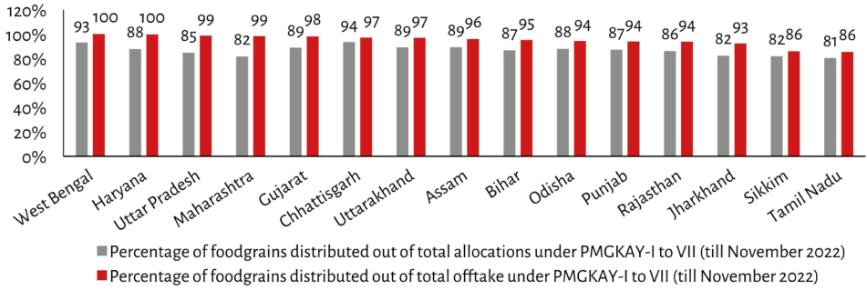

| State | Percentage of foodgrains distributed out of total allocations (Grey) | Percentage of foodgrains distributed out of total offtake (Red) | | :--- | :--- | :--- | | West Bengal | 93% | 100% | | Haryana | 88% | 100% | | Uttar Pradesh | 85% | 100% | | Maharashtra | 99% | 99% | | Gujarat | 82% | 100% | | Chhattisgarh | 89% | 98% | | Uttarakhand | 94% | 97% | | Assam | 89% | 96% | | Bihar | 87% | 95% | | Odisha | 88% | 94% | | Punjab | 87% | 94% | | Rajasthan | 86% | 94% | | Jharkhand | 82% | 93% | | Sikkim | ~82%* | 86% | | Tamil Nadu | 81% | 86% | *Note: The value for 'Sikkim' in the allocation column is estimated based on visual alignment with grid lines.*
